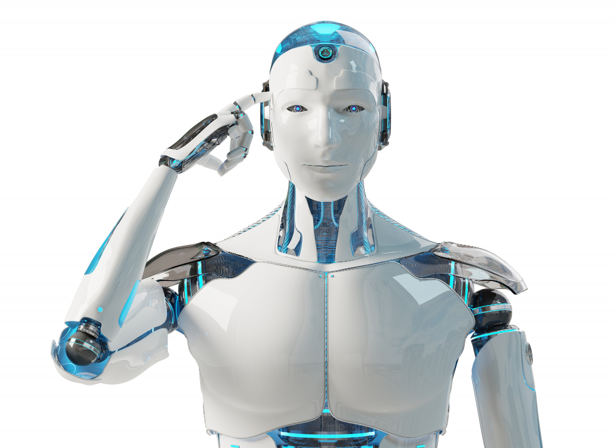

INTRODUCTION
INTRODUCTION
INTRODUCTION
INTRODUCTION

Quelle est la différence entre robotique et intelligence artificielle ? La robotique fait-elle partie de l’IA ou l’inverse ? Est-ce que la robotique est un sous-ensemble de l’IA ? Peut-on vraiment obtenir un robot avec l’intelligence artificielle ?Dans cet article, nos experts répondent à toutes vos questions en mettant l’accent sur la différence entre robotique et intelligence artificielle, ce qui les distingue et ce qui les rassemble.
Contrairement à ce que l’on peut penser, la robotique et l’IA sont deux domaines presque totalement distincts. Cependant, elles peuvent être liées les unes aux autres.
L’intelligence artificielle (IA) est une branche de l’informatique. Il s’agit de développer des programmes informatiques pour concurrencer le cerveau humain et pour accomplir des tâches qui nécessitent de l’intelligence humaine.
Les algorithmes d’IA peuvent s’attaquer à l’apprentissage, à la perception, à la résolution de problèmes, à la compréhension du langage et/ou au raisonnement logique.
Certes, l’intelligence artificielle est utilisée de nombreuses manières dans le monde moderne. Même lorsque l’intelligence artificielle est utilisée pour contrôler des robots, les algorithmes ne sont qu’une partie du système robotique.
Cette partie comprend également :
Le robot artificiellement intelligent est le pont entre la robotique et l’IA. En effet, c’est le robot qui est contrôlé par des programmes d’intelligence artificielle.
Sachant que la plupart des robots ne sont pas artificiellement intelligents. Le robot industriel ne nécessite pas d’IA, car il ne peut être programmé que dans le but d’effectuer une série répétitive de mouvements.
Cependant, les robots non intelligents sont assez limités dans leurs fonctionnalités. Les algorithmes d’IA sont nécessaires lorsque vous souhaitez permettre au robot d’effectuer des tâches plus complexes.
Voici quelques exemples de robots artificiellement intelligents :
Voici quelques avantages de la robotique et intelligence artificielle :
 ACCUEIL
ACCUEIL